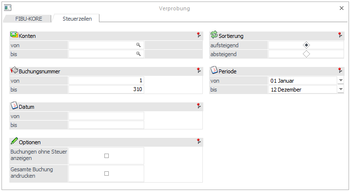
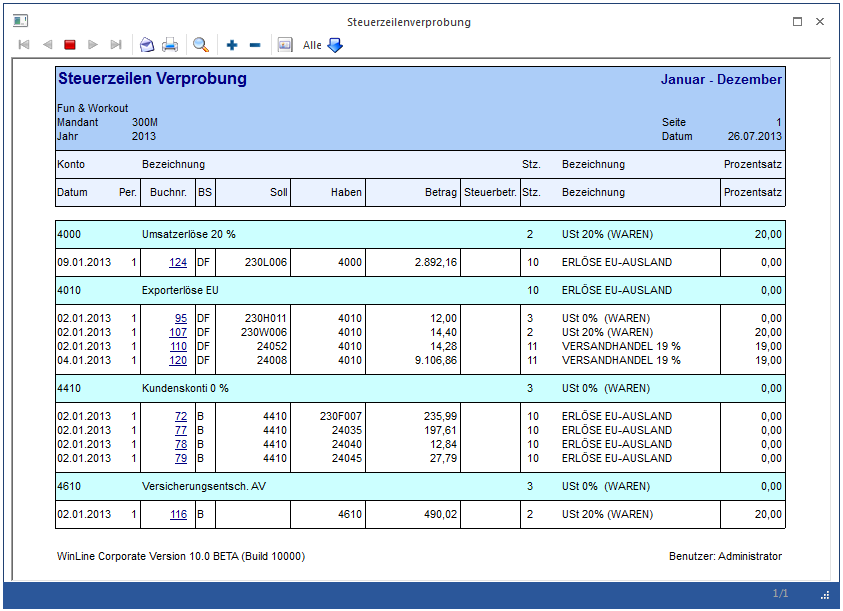

Im Menüpunkt
1 Auswertungen
1 Verprobung
können Sie im Register Steuerzeilen für alle Konten, die im Kontenstamm Steuerzeilen hinterlegt haben, eine Verprobung durchführen. Es werden alle Buchungszeilen, die nicht der im Kontenstamm hinterlegten Steuerzeile entsprechen angedruckt.

Ø Konten von - bis
Durch Eingabe eines Kontenbereichs kann die Verprobung auf diesen Kontenbereich eingeschränkt werden.
Ø Buchungsnummer
Beim Aufruf des Fensters werden alle Journalnummern vorgeschlagen.
Es kann eine Eingrenzung auf bestimmte Journalnummern eingetragen werden.
Ø Datum
Eine Datumseinschränkung von - bis ist möglich.
Ø Sortierung
Die Sortierung der Ausgabe kann aufsteigend oder absteigend erfolgen.
Ø Periode
Wird der Radiobutton auf die Periode gesetzt, dann ist es möglich eine monatsweise Verprobung durchzuführen. Aus der Combobox können Sie die entsprechenden Buchungsperioden auswählen.
Ø Selektion
Optional können noch angedruckt werden:
ü Buchungen ohne Steuer
D. h.
Buchungen die ohne Steuer auf ein Konto mit Steuerzeile im Kontenstamm
durchgeführt wurden.
ü Gesamte Buchung
andrucken
Normalerweise wird bei Splitbuchungen nur die betroffene Splitzeile
gedruckt. Mit dieser Option kann die gesamte Buchung inkl. aller Splitzeilen
gedruckt werden.
